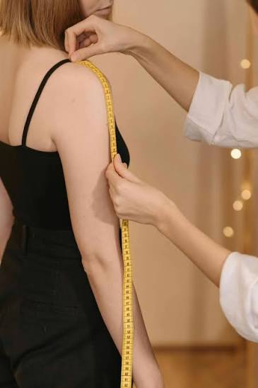
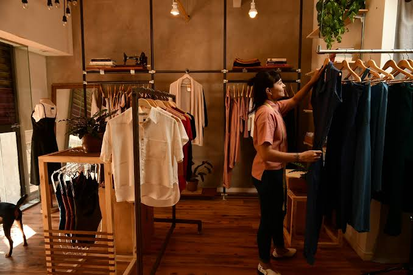
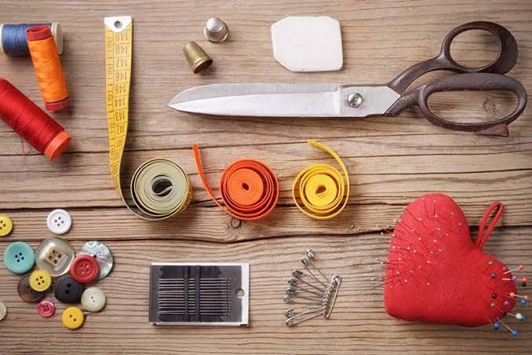
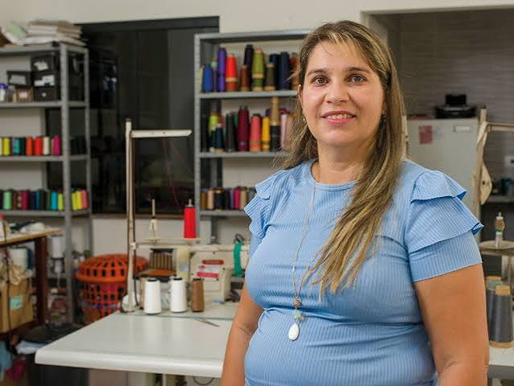
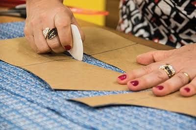

Peças sob medida
Converse sobre medidas, caimento e características da peça que deseja confeccionar.
Consultar atendimentoConfecção sob medida com atenção às medidas, ao caimento e aos detalhes de cada peça. Converse conosco para apresentar sua ideia e consultar as possibilidades.



47.741.021 Maria Vyrginia Meneses Poletto atua na confecção, sob medida, de peças do vestuário, exceto roupas íntimas, em Teresina, Piauí.
Este espaço apresenta nossa atividade e facilita o primeiro contato para conversar sobre peças, necessidades, medidas e possibilidades de atendimento. Cada solicitação deve ser avaliada individualmente para confirmar escopo, prazo, materiais e valores.
Conheça os dados da empresaConverse conosco para entender se sua necessidade se encaixa nos serviços oferecidos e confirmar disponibilidade.

Converse sobre medidas, caimento e características da peça que deseja confeccionar.
Consultar atendimento
Detalhes de tecido, corte e acabamento podem ser alinhados durante a consulta.
Consultar atendimentoApresente suas preferências de materiais e acabamentos para verificar as opções disponíveis.
Consultar atendimentoImagens ilustrativas. Serviços, materiais, valores e prazos precisam ser confirmados diretamente com a empresa.
Uma conversa inicial ajuda a esclarecer sua necessidade e verificar a possibilidade de atendimento antes de qualquer contratação.
Descreva a peça desejada, a ocasião de uso e os detalhes que considera importantes.
Converse sobre medidas, tecido, acabamento e outras especificações necessárias.
Antes de aprovar o serviço, confirme preço, prazo, forma de pagamento e condições combinadas.
O atendimento e a execução dependem da confirmação entre as partes e da disponibilidade.